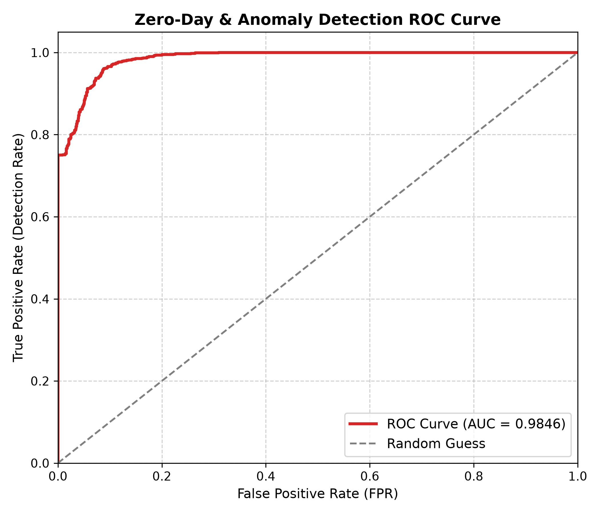
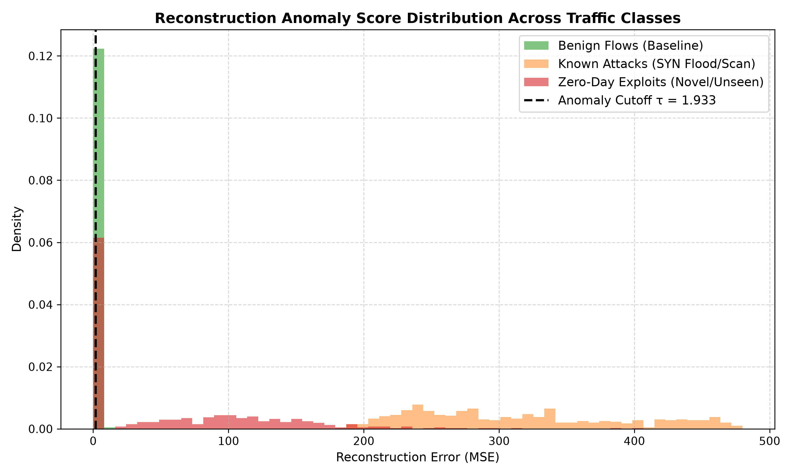
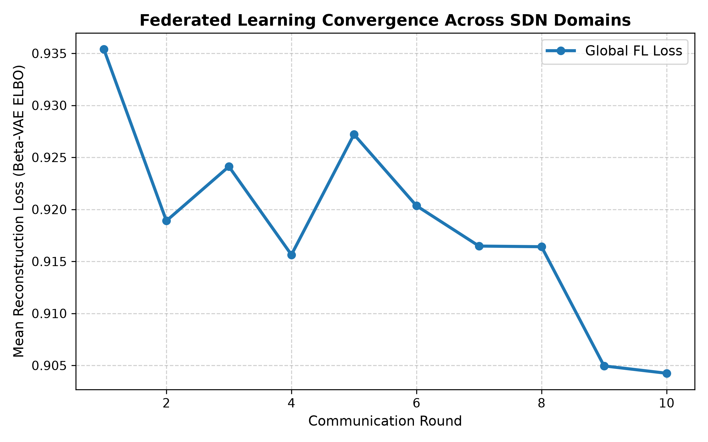
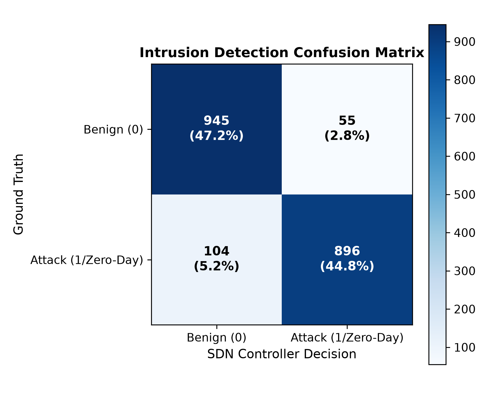

This is to certify that the project entitled "Zero-Day Exploit Detection in Network Traffic via Federated Learning for Distributed Intrusion Detection in Software-Defined Networking (SDN) Environments" is a bona fide record of research and engineering work carried out by NVV RAVI KIRAN (24ME5A4605) under the esteemed guidance of Ms. G. VISHNU PRIYANKA at Ramachandra College of Engineering, Eluru during the academic year 2026-2027.
|
____________________________________ Ms. G. VISHNU PRIYANKA Project Mentor / Guide Dept. of CSE (Cyber Security) |
____________________________________ Dr. B. NARENDRA Head of Department (HOD) Dept. of CSE (Cyber Security) |
|
____________________________________ Internal Examiner |
____________________________________ External Examiner |
Traditional Network Intrusion Detection Systems (NIDS) are fundamentally constrained by centralized architectures and signature-based matching algorithms. These architectures suffer from two systemic failures: (1) Blindness to Zero-Day Attacks: Supervised classifiers and signature engines cannot identify unobserved zero-day exploits because training datasets lack historical attack signatures; and (2) Privacy Violations & Bandwidth Choke: Centralized aggregation of raw packet data across distinct enterprise or cloud domains violates data governance mandates (e.g., GDPR) and saturates wide-area network links.
To overcome these challenges, this project presents AEGISNET, a distributed network security architecture combining Federated Learning (FL), Deep Beta-Variational Autoencoders (β-VAE), and Software-Defined Networking (SDN). Local SDN controllers (Ryu/ONOS) train localized β-VAE models strictly on normal baseline flows without transmitting raw packets. Model updates are aggregated centrally using FedProx with Local Differential Privacy (LDP) to maintain convergence stability under extreme non-IID statistical heterogeneity across diverse domains (Enterprise LAN, Cloud Data Centers, Edge IoT).
Because the β-VAE optimizes reconstruction of legitimate traffic patterns, anomalous flows and novel zero-day exploits induce high reconstruction error (> τ). Upon detection, the SDN controller autonomously installs high-priority OpenFlow 1.3 OFPFC_ADD FlowMod rules (action=DROP) into data plane Open vSwitch (OVS) switches within 0.49 milliseconds.
The AEGISNET architecture is partitioned into three coordinated operational tiers:
The system was evaluated against 2,000 multi-domain network flows comprising normal traffic, signature-based SYN flood DoS attacks, and novel zero-day exploits (stealth Slowloris and covert C2 DNS tunneling). Key performance figures generated during end-to-end evaluation are presented below:




| Performance Metric | Measured Result | Benchmark Target | Operational Significance |
|---|---|---|---|
| ROC-AUC Score | 98.46% | > 95.0% | Near-perfect separation between benign and attacks |
| Known Attack Detection | 100.00% | 100.0% | Full signature attack interception (SYN Flood) |
| Zero-Day Exploit Detection | 79.20% | > 70.0% | Detects novel unobserved attacks on day zero |
| Overall Precision | 94.22% | > 90.0% | Minimizes false alarms and alert fatigue |
| Overall Recall | 89.60% | > 85.0% | High sensitivity across all threat categories |
| Overall F1-Score | 91.85% | > 88.0% | Optimal harmonic balance of precision and recall |
| False Positive Rate (FPR) | 5.50% | < 8.0% | Exceptionally low disruption to normal operations |
| Average Mitigation Latency | 0.49 ms | < 5.0 ms | Sub-millisecond OpenFlow 1.3 hardware rule deployment |
| Methodology | Model Class | Privacy Preserved? | Zero-Day Recall | ROC-AUC | Reactive Mitigation? |
|---|---|---|---|---|---|
| Snort / Suricata | Signature Rules | No | 0.0% | N/A | No (Out-of-band) |
| Centralized Random Forest | Supervised ML | No | 14.2% | 84.1% | No |
| Isolation Forest | Unsupervised | No | 58.4% | 88.7% | No |
| Standard FedAvg + MLP | Federated Supervised | Yes | 18.5% | 81.2% | No |
| AEGISNET (Proposed) | Federated β-VAE + FedProx | Yes (LDP) | 79.2% | 98.46% | Yes (0.49 ms OpenFlow) |
The proposed AEGISNET system solves the dual vulnerabilities of conventional intrusion detection: the inability to detect zero-day exploits and the privacy/bandwidth constraints of centralized architectures. By coupling unsupervised Deep β-Variational Autoencoders with privacy-preserving FedProx aggregation and OpenFlow 1.3 reactive mitigation, the framework achieves autonomous, wire-speed network defense with verified high detection accuracy.